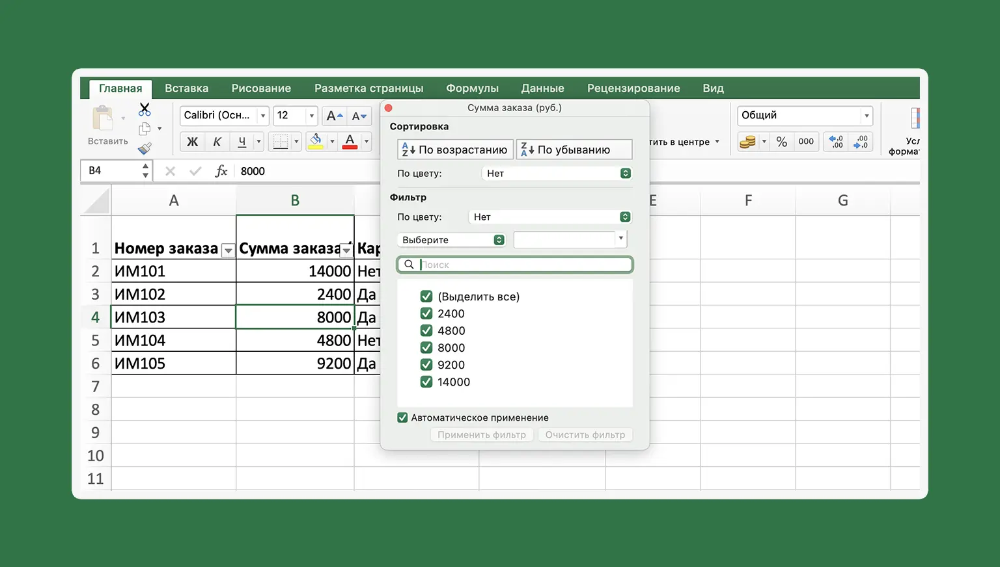

Чему вы научитесь
Перед вами практический онлайн курс для изучения Excel с самых базовых навыков. Рассмотрим интерфейс, научимся создавать таблицы
Правильно организовывать данные в таблицы
Поговорим о том, как правильно создавать таблицы и организовывать
данные внутри них. Рассмотрим принципы работы с большими массивами
данных.

Работать с форматами данных и создавать свои
Изучите доступные форматы данных в Excel, научитесь создавать
собственные пользовательские форматы.

Использовать инструменты преобразования данных
На практических задачах научитесь применять такие инструменты как
"Сортировка и фильтр", "Найти и заменить" и "Автозаполнение". Эти
функции Excel полезны для обработки и анализа данных.

Форматировать таблицы
Научитесь визуально оформлять таблицы для улучшения восприятия
информации. Правильное форматирование поможет увеличить
эффективность работы с данными.
Применять формулы и функции
Изучите основные принципы работы с формулами и функциями,
научитесь использовать разные типы ссылок, создавать сложные
формулы и применять функции разной сложности от СУММ до ВПР.